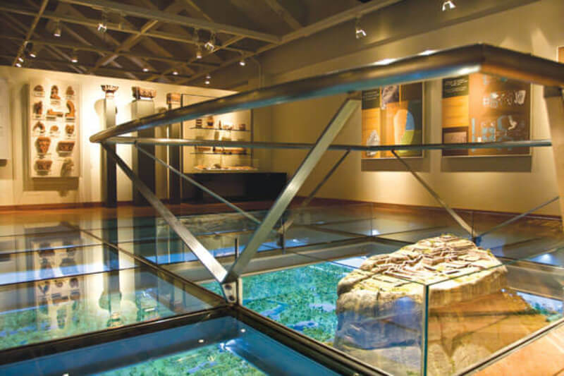

Arguably the most iconic views in all of Sri Lanka, hike to the top of the famous Lion Rock and see
the impressive ancient ruins. The park opens at 7 am and long lines start forming shortly after.
Try to arrive right when they open to avoid the crowds and beat the heat!
To be honest, I actually skipped paying the entrance fee in the name of budget and hiked
Pidurangala instead. I wasn’t too fussed to see the top, but many people say Sigiriya is worth it!
A popular hike with stunning views of Sigiriya, it’s a cheaper alternative to the Lion Rock hike.
Wake up early to see sunrise on top of Pidurangala (in January the sun rises around 6:15am) and pay
only 500 rupees / $3.25 USD. The entrance to the hike is through a temple so you’ll need to rent a
sarong if your shoulders and knees are exposed.
After the short walk through the temple, you’ll climb rock stairs for about 10-20 minutes before
reaching a reclining Buddha statue and a view-point. After that, the trail essentially turns into
about 10-15 minutes of clambering over boulders to get to the top. It’s a lot of fun, but be sure
to wear some good shoes!
You can walk to Pidurangala from the entrance of Sigiriya and it’s about a 30-40 minute walk.
Otherwise, there are many tuk tuks in the area that will take you.
This decent museum has a fine diorama of the site, providing an excellent overview and explaining Sigiriya's cultural importance beyond the obvious natural beauty. The theory that Sigiriya was a Buddhist monastery is given here, although the established position that it was a palace or fortress prevails. Trade routes are explained, showing Sigiriya's connections with the Gulf, China, India and the Roman Empire.
Pause
Riding on the back of the amazing giant in the wild would be an incredible experience in life. An
elephant ride Sri Lanka will be a great opportunity to be so close to the majestic beast, while
enjoying the views of nature, wild life and traditional lifestyles of the people in rural villages
in Sri Lanka. Moreover, an elephant ride in Sri Lanka would allow you to observe the surroundings
in a closer proximity. More than all the facts mentioned above, may be the most precious experience
of this activity is getting to share a day in the life of an elephant.
Usually, well tamed elephants are used for these safaris and certainly the elephant will be
accompanied by the mahout. During an elephant ride Sri Lanka, the passengers would be safely
carried in a wooden saddle, which is a basket like enclosure fixed upon a wooden platform and
placed on the back of the elephant. The saddle would carry four passengers at a time, safely and
comfortably. The riders should be alerted to bend down a bit when necessary in order to avoid being
knocked by the branches of trees along the path during the journey.
In addition to riding on the back of the elephant and enjoying the natural surroundings and
wildlife of the area, you would be able to observe the behaviors and the habitats of this marvelous
mammal on earth. It is up to the holiday makers to share the day with the wondrous giant in certain
ways like picnicking in the bush under the shadow of elephant either bathing, grooming or feeding
it as well. It would be so exciting to see how obedient an elephant is once tamed and trained
properly. Surpassing the massive physical strength of this giant in the wild, the mahout is capable
of handling the elephant by giving the verbal commands in a special language and using the simple
weapon called the ‘goad’.
Habarana is the most popular location in Sri Lanka for elephant safari rides. Habarana is located
210km north east from Colombo and is the transit point of the large herds of wild elephants at the
National Parks of Minneriya and Kaudulla. Further, Habarana is a popular location among the
wildlife enthusiasts and nature tourists. Moreover, Habarana being the central location of the
cultural triangle of Sri Lanka, the culture tourists touring therein too grab the opportunity to
enjoy an elephant ride in Sri Lanka. The irrigation reservoirs and waterways of the area bring in a
riverine terrain where the elephants would wade through, or swim to reach the banks in the farther
end. The ride would also take place over the main road, the pathways, villages, jungles, swamp and
river.
No need to think twice about grabbing this unique experience through an exciting elephant ride
while holidaying in the precious island Sri Lanka, which is a splendor of nature indeed.